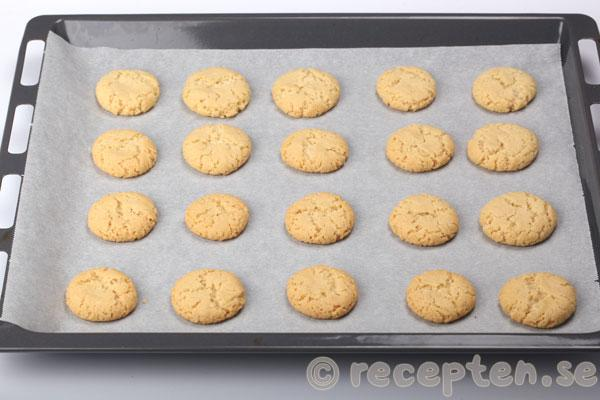

Drömmar
Underbara drömmar som är namnet på dessa klassiska småkakor. Mycket goda spröda små kakor som smälter i munnen.
Ingredienser:
- 100 g smör
- 2 dl strösocker
- 2 tsk vaniljsocker
- 1 dl matolja
- 1 tsk hjorthornssalt
- 4 dl (240 g) vetemjöl
Gör så här:
-
Mät upp smör, strösocker och vaniljsocker i en bunke. Låt stå framme tills smöret är rumsvarmt (dela gärna smöret i mindre bitar så går det snabbt).
Arbeta ihop till en jämn smet. Jag använder elvisp med vispar genomgående i detta recept.
- 100 g smör
- 2 dl strösocker
- 2 tsk vaniljsocker
-
Tillsätt matolja och hjorthornssalt. Kör med elvisp till en jämn slät smet.
- 1 dl matolja
- 1 tsk hjorthornssalt
-
Tillsätt vetemjölet. (Tänk på att mäta upp mjölet med litermått eller väga det. Gräver man med decilitermått i mjölpåsen så packas mjölet och man tar automatiskt för mycket mjöl, då blir det svårt att få ihop degen och kakorna blir inte lika spröda och fina.) Kör med elvisp tills smeten består av stora smulor och smeten gärna fastnar i visparna. Tryck ihop smeten till en enda klump.
-
Dela degen i små bitar (en sats ska bli ca 50 st kakor). Rulla varje bit till en boll och lägg på plåtar med bakplåtspapper.
-
Grädda mitt i ugnen i 150°C i ca 20 minuter. (Samma tid och temperatur med varmluftsinställning.) Låt svalna. Förvara kakorna i plåtburkar med lock eller frys in dem.
